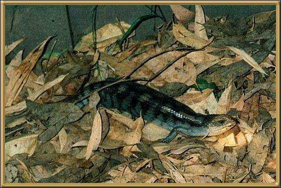
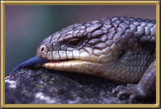

This poor fellow was cornered in our back yard by the
dogs. They didn't hurt him, just barked a lot to draw our attention to him.
These are quite big lizards, and if you look below you'll see why they're called Blue
Tongues.
Photographer: Jean Stokes

As you can see, a bright blue tongue! They're harmless and actually make good pets, properly kept. Although I'm not sure if you're allowed to keep them as pets any longer. They are very handy to have in the garden as they keep the insect populations down.
Photographer: Unknown